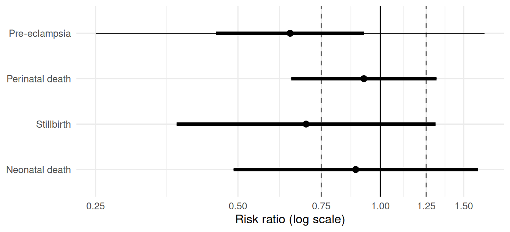

15 Certainty of Evidence (GRADE) and Reporting
A pooled estimate with a confidence interval is not yet a conclusion. Readers of a meta-analysis, whether clinicians, policy makers, managers, or other researchers, need to know how much to trust the estimate, and they need the information presented so that they can check it, reuse it, and apply it to their own setting. This chapter covers both tasks. The first half introduces the GRADE approach to rating the certainty of a body of evidence and builds a Summary of Findings table in R from metafor model fits, including absolute effects and certainty ratings. The second half turns to reporting: the PRISMA 2020 items that concern the synthesis, the main extensions and discipline-specific standards, how to write a results paragraph directly from model output, what to report about heterogeneity, and the practices that make a meta-analysis reproducible and updatable.
15.1 From a pooled estimate to a judgment about certainty
The preceding chapters produced many numbers: a pooled effect, its confidence interval, \(\tau\), a prediction interval, subgroup estimates, small-study tests, sensitivity analyses, and risk-of-bias assessments. None of these alone says how confident one should be that the true effect is close to the estimate. A precise estimate built on trials at high risk of bias, or on studies of a different population than the one of interest, can be misleading. An imprecise estimate from excellent trials can still support a firm conclusion if every value in its confidence interval implies the same decision.
The GRADE approach (Grading of Recommendations Assessment, Development and Evaluation) provides a structured and transparent way to combine these considerations into a single rating of certainty for each outcome (Guyatt et al. 2008; G. Guyatt et al. 2011). It is used by Cochrane, the World Health Organization, and many guideline organizations, and its logic applies well beyond medicine: any synthesis that informs a decision benefits from an explicit statement of how much the evidence can bear.
15.2 The GRADE approach
15.2.1 Certainty and what it means
GRADE rates the certainty (earlier called quality) of evidence for each outcome on four levels (Balshem et al. 2011):
- High: we are very confident that the true effect lies close to the estimate.
- Moderate: we are moderately confident; the true effect is likely to be close to the estimate, but there is a possibility that it is substantially different.
- Low: our confidence is limited; the true effect may be substantially different from the estimate.
- Very low: we have very little confidence; the true effect is likely to be substantially different from the estimate.
The GRADE Working Group has since clarified that certainty is always certainty about something: that the true effect lies on one side of a threshold, or within a specified range (Hultcrantz et al. 2017). In a systematic review without a specific decision context, the usual target is whether the effect is above or below the null (or a minimal important difference); in a guideline, the thresholds are set by what would change a recommendation. Choosing the target explicitly is what makes ratings of imprecision and inconsistency reproducible (Zeng et al. 2022; Schünemann et al. 2022).
15.2.2 Starting certainty by study design
Evidence from randomized trials starts at high certainty and evidence from observational studies at low certainty, reflecting the greater risk of confounding in the latter (Balshem et al. 2011). When non-randomized studies are assessed with ROBINS-I, which judges them against a target trial (Chapter 2), the body of evidence can start at high certainty and is then usually rated down for risk of bias, so that the ROBINS-I judgment carries the concern about confounding (Schünemann et al. 2019). From the starting level, certainty is rated down for five kinds of concern and, for observational evidence, can be rated up for three.
15.2.3 Five reasons to rate down
Each domain can lower certainty by one level (serious concern) or two (very serious concern).
Risk of bias. Rate down when the pooled result depends on studies whose limitations are likely to bias it, judged from the domain-level assessments of Chapter 2 (G. H. Guyatt, Oxman, Vist, et al. 2011). The question is not whether some studies are at high risk but whether their influence on the pooled estimate is enough to lower confidence; a sensitivity analysis restricted to studies at low risk answers it directly.
Inconsistency. Rate down when effects vary across studies more than can be explained, in a way that matters for the decision (G. H. Guyatt, Oxman, Kunz, Woodcock, Brozek, Helfand, Alonso-Coello, Glasziou, et al. 2011). The signals are point estimates that differ widely, confidence intervals that overlap little, a small \(p\)-value for the \(Q\) test, and a large \(I^2\). Because \(I^2\) is a relative measure that depends on study precision (Rücker et al. 2008; Borenstein et al. 2017), the more useful question is whether the prediction interval spans values that would lead to different decisions. If the inconsistency is explained by a credible moderator (Chapter 5), separate estimates should be presented instead of rating down.
Indirectness. Rate down when the evidence differs from the question in population, intervention, comparator, or outcome, for example when trials used a surrogate outcome or an older version of the intervention, or when two interventions were compared only indirectly (G. H. Guyatt, Oxman, Kunz, Woodcock, Brozek, Helfand, Alonso-Coello, Falck-Ytter, et al. 2011). The last case is central to network meta-analysis (Chapter 10), for which GRADE has a dedicated approach (Puhan et al. 2014).
Imprecision. Rate down when the confidence interval is wide relative to the decision threshold (G. H. Guyatt, Oxman, Kunz, Brozek, et al. 2011). Under the minimally contextualized approach, the reviewer rates down when the confidence interval crosses the threshold of interest, often the null or a minimal important difference, and by two or three levels when it is very wide (Zeng et al. 2022). A classical default for binary outcomes is to treat a relative risk reduction or increase of 25% as appreciable (G. H. Guyatt, Oxman, Kunz, Brozek, et al. 2011). Even when the interval does not cross the threshold, certainty can be rated down if the total sample size is smaller than the optimal information size (OIS), the sample size a single adequately powered trial would need. With few events, a pooled estimate can be both “significant” and fragile (Schünemann 2016).
Publication bias. Rate down when there is reason to suspect that studies are missing selectively, for example a literature dominated by small industry-funded trials, an asymmetric funnel plot, or registered trials that were never reported (G. H. Guyatt, Oxman, Montori, et al. 2011). Funnel-plot methods need at least about ten studies (Chapter 7); with fewer, the judgment rests on the search and the registry evidence. Because publication bias can rarely be proven, GRADE describes it as “strongly suspected” or “undetected” rather than present or absent.
The domains should not double-count. A single problem, such as an outcome measured in a way that favors the intervention, should lower certainty once, in the domain where it fits best, with the reasoning stated in a footnote.
15.2.4 Three reasons to rate up
For bodies of observational evidence without serious limitations, certainty can be rated up (G. H. Guyatt, Oxman, Sultan, et al. 2011): for a large effect (by one level for a risk ratio above 2 or below 0.5 from consistent evidence with no plausible confounders, by two levels for a risk ratio above 5 or below 0.2); for a dose-response gradient; and when all plausible residual confounding would reduce a demonstrated effect, or would create a spurious effect where none was observed. Rating up is uncommon and should be argued explicitly.
15.2.5 Overall certainty
Certainty is rated separately for each outcome. When a single overall rating is needed, for example to support a recommendation, it is the lowest certainty among the outcomes judged critical for the decision (G. Guyatt et al. 2013). GRADE does not require a meta-analysis: when studies cannot be pooled and the synthesis is narrative, certainty can still be rated using the same domains (Murad et al. 2017). A useful discipline is to rate certainty before looking at whether the conclusions are welcome; GRADE judgments involve subjectivity, and the footnotes that justify each judgment are what allow others to disagree productively.
15.3 A Summary of Findings table in R
A Summary of Findings (SoF) table presents, for each important outcome, the number of studies
and participants, the relative effect, the absolute effects, and the certainty of the evidence,
with footnotes explaining every judgment (G. Guyatt et al. 2011; G. H. Guyatt et al. 2013). This section
builds one for the trials of diuretics in pregnancy compiled by Collins et al. (1985), available as
dat.collins1985b in metadat. Nine trials compared diuretics with placebo or no treatment and
reported pre-eclampsia, perinatal death, stillbirth, and neonatal death.
The certainty ratings in this section are illustrative. They are based on what the dataset records and on general features of these trials, not on a formal risk-of-bias assessment of the original reports, and they should not be read as a clinical appraisal of diuretics in pregnancy.
15.3.1 Fitting the models
The four outcomes are binary, so each is analyzed as a log risk ratio with a random-effects model. The mortality outcomes share the same follow-up denominators; stillbirth and neonatal death are missing for one trial.
dat <- dat.collins1985b
spec <- data.frame(
outcome = c("Pre-eclampsia", "Perinatal death", "Stillbirth", "Neonatal death"),
ai = c("pre.xti", "ped.xti", "stb.xti", "ned.xti"),
n1i = c("pre.nti", "fup.nti", "fup.nti", "fup.nti"),
ci = c("pre.xci", "ped.xci", "stb.xci", "ned.xci"),
n2i = c("pre.nci", "fup.nci", "fup.nci", "fup.nci")
)
fit_outcome <- function(row) {
d <- data.frame(ai = dat[[row$ai]], n1i = dat[[row$n1i]],
ci = dat[[row$ci]], n2i = dat[[row$n2i]])
d <- d[complete.cases(d), ]
list(data = d,
fit = rma(measure = "RR", ai = ai, n1i = n1i, ci = ci, n2i = n2i, data = d))
}
fits <- lapply(split(spec, spec$outcome)[spec$outcome], fit_outcome)
summ <- do.call(rbind, lapply(names(fits), function(o) {
m <- fits[[o]]$fit; d <- fits[[o]]$data; p <- predict(m, transf = exp)
data.frame(outcome = o, k = m$k, N = sum(d$n1i + d$n2i), events = sum(d$ai + d$ci),
RR = p$pred, ci.lb = p$ci.lb, ci.ub = p$ci.ub,
pi.lb = p$pi.lb, pi.ub = p$pi.ub, tau = sqrt(m$tau2), I2 = m$I2)
}))
print(summ, digits = 3, row.names = FALSE)
#> outcome k N events RR ci.lb ci.ub pi.lb pi.ub tau I2
#> Pre-eclampsia 9 6942 636 0.645 0.450 0.924 0.250 1.66 0.446 76.7
#> Perinatal death 9 6864 123 0.923 0.648 1.315 0.648 1.31 0.000 0.0
#> Stillbirth 8 4158 37 0.697 0.371 1.308 0.371 1.31 0.000 0.0
#> Neonatal death 8 4158 43 0.887 0.489 1.606 0.489 1.61 0.000 0.0Pre-eclampsia is the only outcome with clear heterogeneity: \(\hat\tau\) = 0.45, \(I^2\) = 77%, and a 95% prediction interval of 0.25 to 1.66 around a pooled risk ratio of 0.64. For the mortality outcomes \(\hat\tau^2\) is zero, so the prediction intervals coincide with the confidence intervals, and all three intervals are wide because deaths are rare: there were only 123 perinatal deaths in 6,864 pregnancies. Chapter 4 discusses alternatives to these defaults, such as the Hartung-Knapp confidence interval and methods that suit rare events better than inverse-variance pooling of log risk ratios; the defaults are kept here to focus on the presentation.
15.3.2 Thresholds, imprecision, and inconsistency
Imprecision and inconsistency are judged against thresholds. Following the classical GRADE default, we treat a relative risk reduction or increase of 25% (risk ratios of 0.75 and 1.25) as appreciable, with the null (a risk ratio of 1) as the primary threshold. Figure 15.1 places each outcome’s confidence and prediction intervals against these lines.
summ$label <- factor(summ$outcome, rev(summ$outcome))
ggplot(summ, aes(y = label)) +
geom_vline(xintercept = 1) +
geom_vline(xintercept = c(0.75, 1.25), linetype = "dashed", colour = "grey40") +
geom_segment(aes(x = pi.lb, xend = pi.ub, yend = label), linewidth = 0.4) +
geom_segment(aes(x = ci.lb, xend = ci.ub, yend = label), linewidth = 1.6) +
geom_point(aes(x = RR), size = 2.5) +
scale_x_log10(breaks = c(0.25, 0.5, 0.75, 1, 1.25, 1.5)) +
labs(x = "Risk ratio (log scale)", y = NULL)
Figure 15.1: Pooled risk ratios with 95% confidence intervals (thick) and 95% prediction intervals (thin) for four outcomes, on a log scale. The solid line marks the null; dashed lines mark the thresholds for an appreciable benefit or harm (risk ratios of 0.75 and 1.25).
Imprecision can be rated mechanically once the thresholds are fixed. The function below applies a rule in the spirit of GRADE: rate down one level if the confidence interval crosses the null, two levels if it includes both an appreciable benefit and an appreciable harm, and one level if the interval excludes the null but the total sample size falls short of the optimal information size. The OIS is computed as the total sample size of a two-arm trial with 80% power to detect a 25% relative risk reduction at the assumed control risk.
ois <- function(control_risk, rrr = 0.25, power = 0.8) {
2 * ceiling(power.prop.test(p1 = control_risk, p2 = control_risk * (1 - rrr),
power = power)$n)
}
rate_imprecision <- function(lb, ub, N, ois_n, benefit = 0.75, harm = 1.25) {
if (lb < benefit && ub > harm) return(-2)
if (lb < 1 && ub > 1) return(-1)
if (N < ois_n) return(-1)
0
}
# assumed control risk: median control-group risk across the trials
summ$acr <- sapply(fits, function(f) median(f$data$ci / f$data$n2i))
summ$ois <- sapply(summ$acr, ois)
summ$imprecision <- mapply(rate_imprecision, summ$ci.lb, summ$ci.ub, summ$N, summ$ois)
summ[, c("outcome", "N", "acr", "ois", "ci.lb", "ci.ub", "imprecision")]
#> outcome N acr ois ci.lb ci.ub imprecision
#> 1 Pre-eclampsia 6942 0.12687 3078 0.4498 0.924 0
#> 2 Perinatal death 6864 0.02727 15730 0.6480 1.315 -2
#> 3 Stillbirth 4158 0.01594 27188 0.3711 1.308 -2
#> 4 Neonatal death 4158 0.01194 36418 0.4895 1.606 -2For pre-eclampsia, the confidence interval excludes the null and the trials include more participants than the OIS of 3,078, so imprecision is not a serious concern. For each mortality outcome the interval includes both a 25% reduction and a 25% increase in risk, and the total sample size is between 2 and 9 times smaller than the OIS, which is large because the outcomes are rare. These outcomes are rated down two levels for imprecision.
The remaining judgments require reading the trials, and they are recorded with their reasons.
Several of the trials used oedema as one of the diagnostic criteria for pre-eclampsia
(the oedema variable), and diuretics reduce oedema directly, so the measured outcome is biased
in favor of diuretics: a serious risk-of-bias concern in the measurement of the outcome. The
sensitivity analysis below supports the concern.
res_pre_no_oedema <- rma(measure = "RR", ai = pre.xti, n1i = pre.nti, ci = pre.xci,
n2i = pre.nci, data = dat, subset = oedema == 0)
predict(res_pre_no_oedema, transf = exp, digits = 2)
#>
#> pred ci.lb ci.ub pi.lb pi.ub
#> 0.77 0.56 1.06 0.39 1.54Restricted to the 7 trials that did not use oedema as a criterion, the risk ratio is 0.77 (95% CI 0.56 to 1.06), closer to the null and no longer excluding it. The pre-eclampsia evidence is also rated down for inconsistency, since the prediction interval extends from a large benefit to an appreciable harm. Mortality outcomes are objectively measured and show no heterogeneity. With nine or fewer trials per outcome, funnel-plot methods are uninformative, and publication bias is recorded as undetected.
15.3.3 Absolute effects and the table
Relative effects tend to be more stable across populations than absolute effects, but decisions depend on absolute effects. GRADE therefore presents the risk in the control group, the corresponding risk with the intervention, and their difference, usually per 1,000 people (G. H. Guyatt et al. 2013). With an assumed control risk \(p_C\) and a pooled risk ratio \(\widehat{RR}\) with confidence limits \((L, U)\),
\[ \hat p_I = p_C \cdot \widehat{RR}, \qquad \widehat{\Delta} = p_C(\widehat{RR} - 1), \qquad \text{95\% CI for } \Delta = \big(p_C(L - 1),\; p_C(U - 1)\big). \]
The assumed control risk should reflect the population to which the results will be applied. Here it is the median control-group risk across the trials; a guideline would often use risks from a representative cohort and might present several baseline risks.
judgments <- data.frame(
outcome = spec$outcome,
risk_of_bias = c(-1, 0, 0, 0),
inconsistency = c(-1, 0, 0, 0),
indirectness = c(0, 0, 0, 0),
publication = c(0, 0, 0, 0)
)
sof <- merge(summ, judgments, by = "outcome", sort = FALSE)
sof$score <- 4 + sof$risk_of_bias + sof$inconsistency + sof$indirectness +
sof$imprecision + sof$publication
grade_label <- function(s) {
s <- max(1, min(4, s))
c("⊕◯◯◯ Very low", "⊕⊕◯◯ Low",
"⊕⊕⊕◯ Moderate", "⊕⊕⊕⊕ High")[s]
}
per1000 <- function(x) round(1000 * x)
diff_text <- function(acr, rr, lb, ub) {
d <- per1000(acr * (c(rr, lb, ub) - 1))
dir <- function(v) if (v < 0) paste(abs(v), "fewer") else paste(v, "more")
sprintf("%s (%s to %s)", dir(d[1]), dir(d[2]), dir(d[3]))
}
sof_tab <- data.frame(
Outcome = sof$outcome,
`Participants (trials)` = sprintf("%s (%d)", format(sof$N, big.mark = ","), sof$k),
`Relative effect RR (95% CI)` = sprintf("%.2f (%.2f to %.2f)", sof$RR, sof$ci.lb, sof$ci.ub),
`Risk with control` = sprintf("%d per 1,000", per1000(sof$acr)),
`Risk with diuretics` = sprintf("%d per 1,000", per1000(sof$acr * sof$RR)),
`Difference per 1,000 (95% CI)` = mapply(diff_text, sof$acr, sof$RR, sof$ci.lb, sof$ci.ub),
Certainty = sapply(sof$score, grade_label),
check.names = FALSE
)
sof_tab$Certainty <- paste0(sof_tab$Certainty, c("^a,b^", "^c^", "^c^", "^c^"))
knitr::kable(sof_tab, align = "lcccccl",
caption = "Summary of findings: diuretics compared with placebo or no treatment in pregnancy.")| Outcome | Participants (trials) | Relative effect RR (95% CI) | Risk with control | Risk with diuretics | Difference per 1,000 (95% CI) | Certainty |
|---|---|---|---|---|---|---|
| Pre-eclampsia | 6,942 (9) | 0.64 (0.45 to 0.92) | 127 per 1,000 | 82 per 1,000 | 45 fewer (70 fewer to 10 fewer) | ⊕⊕◯◯ Lowa,b |
| Perinatal death | 6,864 (9) | 0.92 (0.65 to 1.31) | 27 per 1,000 | 25 per 1,000 | 2 fewer (10 fewer to 9 more) | ⊕⊕◯◯ Lowc |
| Stillbirth | 4,158 (8) | 0.70 (0.37 to 1.31) | 16 per 1,000 | 11 per 1,000 | 5 fewer (10 fewer to 5 more) | ⊕⊕◯◯ Lowc |
| Neonatal death | 4,158 (8) | 0.89 (0.49 to 1.61) | 12 per 1,000 | 11 per 1,000 | 1 fewer (6 fewer to 7 more) | ⊕⊕◯◯ Lowc |
Footnotes to Table 15.1: a Rated down one level for risk of bias: several trials included oedema, which diuretics reduce directly, in the definition of pre-eclampsia; excluding them moves the estimate toward the null. b Rated down one level for inconsistency: \(I^2\) = 77%, and the 95% prediction interval (0.25 to 1.66) includes both a large benefit and an appreciable harm. c Rated down two levels for imprecision: the confidence interval includes both a 25% relative reduction and a 25% relative increase in risk, few events, and a total sample size well below the optimal information size.
All four outcomes end at low certainty, for different reasons, and the footnotes are what tell a reader which. The pre-eclampsia estimate is precise but probably biased and heterogeneous; the mortality estimates are unbiased as far as we can tell but too imprecise to exclude either a meaningful benefit or a meaningful harm. This distinction matters for what further research would help: a new trial would need a clean definition of pre-eclampsia to resolve the first question, and a very large size to resolve the second.
For publication-quality SoF tables, the gt and kableExtra packages offer footnote and styling
functions, and the GRADEpro tool produces tables in the official format. Generating the table
from the model objects, as here, guarantees that the numbers in the table match the analysis.
15.3.4 The evidence profile
A Summary of Findings table is written for decision makers and hides the domain-level judgments
in footnotes. The evidence profile is its companion for reviewers and methodologists: one row
per outcome and one column per GRADE domain, so that every judgment is visible
(G. Guyatt et al. 2011). Because the judgments are already stored in sof, the profile is a
different view of the same object.
level_text <- function(x) c("-2" = "Very serious", "-1" = "Serious", "0" = "Not serious")[as.character(x)]
profile <- data.frame(
Outcome = sof$outcome,
`Studies (design)` = paste(sof$k, "RCTs"),
`Risk of bias` = level_text(sof$risk_of_bias),
Inconsistency = level_text(sof$inconsistency),
Indirectness = level_text(sof$indirectness),
Imprecision = level_text(sof$imprecision),
`Publication bias` = ifelse(sof$publication == 0, "Undetected", "Strongly suspected"),
Certainty = sub("^\\S+ ", "", sapply(sof$score, grade_label)),
check.names = FALSE, row.names = NULL
)
knitr::kable(profile, caption = "GRADE evidence profile for the diuretics example.")| Outcome | Studies (design) | Risk of bias | Inconsistency | Indirectness | Imprecision | Publication bias | Certainty |
|---|---|---|---|---|---|---|---|
| Pre-eclampsia | 9 RCTs | Serious | Serious | Not serious | Not serious | Undetected | Low |
| Perinatal death | 9 RCTs | Not serious | Not serious | Not serious | Very serious | Undetected | Low |
| Stillbirth | 8 RCTs | Not serious | Not serious | Not serious | Very serious | Undetected | Low |
| Neonatal death | 8 RCTs | Not serious | Not serious | Not serious | Very serious | Undetected | Low |
Read across a row, the profile shows how each certainty rating was reached; read down a column, it shows which concern dominates the body of evidence. Here imprecision is the binding constraint for every mortality outcome, which tells a reader immediately that the problem is too little data, not bad data.
15.3.5 How sensitive are the ratings to the thresholds?
The imprecision ratings above depend on the choice of a 25% relative change as the threshold for an appreciable effect. That choice is a value judgment, and with rare but serious outcomes such as perinatal death, many decision makers would regard a much smaller relative change as important. Recomputing the ratings for a range of thresholds shows how much the conclusions depend on it.
thresholds <- c(0.10, 0.25, 0.40)
sens <- sapply(thresholds, function(t) {
mapply(function(lb, ub, N, acr) {
rate_imprecision(lb, ub, N, ois(acr, rrr = t), benefit = 1 - t, harm = 1 + t)
}, summ$ci.lb, summ$ci.ub, summ$N, summ$acr)
})
dimnames(sens) <- list(summ$outcome, paste0("RRR/RRI ", 100 * thresholds, "%"))
sens
#> RRR/RRI 10% RRR/RRI 25% RRR/RRI 40%
#> Pre-eclampsia -1 0 0
#> Perinatal death -2 -2 -1
#> Stillbirth -2 -2 -1
#> Neonatal death -2 -2 -2With a 10% threshold, the pre-eclampsia evidence is rated down for imprecision as well, because the trials no longer reach the much larger optimal information size needed to detect a 10% relative reduction. With a 40% threshold, perinatal death and stillbirth are still rated down by one level, because their confidence intervals cross the null, and neonatal death by two, because its interval spans a 40% reduction and a 40% increase. The conclusion that the mortality evidence is imprecise is robust to the threshold; the conclusion that the pre-eclampsia evidence is precise enough is not. Stating the threshold, and showing how the ratings change with it, is what the GRADE guidance on contextualization asks for (Zeng et al. 2022; Schünemann et al. 2022).
15.4 Reporting standards
15.4.1 PRISMA 2020
The PRISMA 2020 statement is the main reporting guideline for systematic reviews and meta-analyses (Page, McKenzie, et al. 2021), replacing the 2009 statement (Moher et al. 2009). It consists of a 27-item checklist, an abstract checklist, and the flow diagram described in Chapter 2; the explanation and elaboration paper gives the rationale and examples for each item (Page, Moher, et al. 2021). The items most directly concerned with the statistical synthesis are:
- Item 12, effect measures: the effect measure used for each outcome (for example risk ratio, standardized mean difference).
- Item 13, synthesis methods (13a to 13f): how studies were grouped for each synthesis, how data were prepared (handling of missing statistics, conversions), how results were tabulated and displayed, the meta-analysis model and its rationale, the method for estimating and identifying heterogeneity and the software used, methods to explore heterogeneity, and sensitivity analyses.
- Items 14 and 15: methods for assessing the risk of bias due to missing results (reporting biases) and for assessing certainty.
- Item 20, results of syntheses (20a to 20d): for each synthesis, the characteristics and risk of bias of the contributing studies, the summary estimate with its confidence interval and measures of heterogeneity, the results of investigations of heterogeneity, and the results of sensitivity analyses.
- Items 21 and 22: assessments of reporting biases and of certainty for each outcome.
- Items 24 and 27: registration and protocol, and the availability of data, analytic code, and other materials.
15.4.2 Extensions and other standards
Extensions adapt PRISMA to particular review types. PRISMA-NMA covers network meta-analyses, adding items on the geometry of the network, the assessment of inconsistency, and the presentation of treatment rankings (Hutton et al. 2015) (Chapter 10). PRISMA-IPD covers meta-analyses of individual participant data, including how data were obtained, checked, and analyzed (Stewart et al. 2015) (Chapter 12). PRISMA-DTA covers diagnostic test accuracy reviews (McInnes et al. 2018) (Chapter 13). PRISMA-P and PRISMA-S, for protocols and search reporting, were discussed in Chapter 2.
Two further standards are common in the social sciences and in epidemiology. In psychology, the APA Journal Article Reporting Standards for quantitative research (JARS-Quant) include the Meta-Analysis Reporting Standards (MARS), which many psychology and management journals require (Appelbaum et al. 2018). MARS overlaps substantially with PRISMA and asks for more detail on matters that are common in behavioral research, such as how moderators were coded and how statistical dependencies among effect sizes were handled. For meta-analyses of observational studies, MOOSE gives a checklist covering background, search strategy, methods, results, discussion, and conclusions (Stroup et al. 2000). When a journal names one standard, follow it, and consider including a completed PRISMA checklist as well; the overlap makes this cheap.
15.5 Writing the results
15.5.1 What to report about heterogeneity
Heterogeneity is often reported only as \(I^2\) with the \(p\)-value of the \(Q\) test. Both are incomplete. \(I^2\) is the proportion of observed variance that is not sampling error; it depends on the precision of the studies as well as on how much the true effects vary, so the same \(\tau\) can produce a small \(I^2\) in a meta-analysis of small studies and a large one in a meta-analysis of large studies (Rücker et al. 2008; Borenstein et al. 2017). The \(Q\) test has low power with few studies and rejects trivial heterogeneity with many.
A complete report gives:
- \(\hat\tau\) (or \(\hat\tau^2\)) with its confidence interval, on the scale of the effect size, and the estimator used;
- the prediction interval, which translates \(\tau\) into the range of true effects to expect in a new setting (Riley et al. 2011; IntHout et al. 2016);
- \(Q\) with its degrees of freedom and \(p\)-value, and \(I^2\) with its confidence interval, as secondary descriptors.
For effects on a log scale, report the prediction interval back-transformed (as a range of risk ratios or odds ratios), since few readers can interpret \(\tau\) = 0.45 on the log scale directly.
15.5.2 Figures and tables
A small set of displays covers most meta-analyses. A table of study characteristics lists, for each included study, the design, sample size, population, intervention and comparator details, outcome measures, and risk-of-bias judgments; it is usually the longest table in the review and often belongs in the supplement. A forest plot for each main synthesis shows the study estimates with their confidence intervals and weights, the pooled estimate, and the prediction interval (Chapter 1); when subgroups are analyzed, a forest plot grouped by subgroup with subgroup summaries is clearer than a table. A funnel plot, with contour enhancement, accompanies any assessment of small-study effects (Chapter 7), and risk-of-bias summary and traffic-light plots show the domain-level assessments (Chapter 2). Finally, the Summary of Findings table brings the main outcomes together with their certainty. Each display should state the effect measure, the model, and the direction of benefit, so that it can be read without the text.
For subgroup analyses and meta-regression, report the number of studies in each subgroup or the range of the moderator, the test of the moderator with its degrees of freedom, the residual heterogeneity, and whether the analysis was pre-specified. Post hoc moderator analyses are legitimate but exploratory, and their findings should be described as hypotheses (Chapter 5).
15.5.3 The methods paragraph
PRISMA item 13d asks for the model, the method for estimating heterogeneity, and the software. A methods description should let a reader refit the model exactly: the effect measure and its scale, the model (common-effect or random-effects), the estimator of \(\tau^2\), the method used for confidence intervals and tests, how the prediction interval was computed, how zero cells or missing statistics were handled, and the software with version numbers. Version numbers can be taken from the running session, so that they are always correct:
Risk ratios were analyzed on the log scale. We fitted random-effects models with the restricted maximum likelihood estimator of the between-trial variance \(\tau^2\), Wald-type confidence intervals, and 95% prediction intervals for the risk ratio in a new trial. Confidence intervals for \(\tau^2\) were obtained with the Q-profile method. Absolute effects were computed at the median control-group risk across trials. Analyses used R 4.6.2 and the metafor package, version 5.2.1 (Viechtbauer 2010).
Two details deserve attention. Defaults change between software versions, so naming the estimator and interval method explicitly is safer than writing “default settings”. And if the analysis deviated from the protocol, for example by switching from a common-effect to a random-effects model, the methods section is where to say so and why.
15.5.4 A results paragraph generated from model output
Results paragraphs are a common source of errors: numbers copied from output into a manuscript drift out of date when the analysis changes. Writing the paragraph with inline R code, so that every number is computed when the document is rendered, removes this source of error. The following paragraph is generated this way from the pre-eclampsia model; the R Markdown source shows the inline code.
res_pre <- fits[["Pre-eclampsia"]]$fit
ci_tau <- confint(res_pre)$random
p_pre <- predict(res_pre, transf = exp)In total, 9 randomized trials (6,942 participants, 636 events) compared diuretics with placebo or no treatment for the prevention of pre-eclampsia. In a random-effects model with the REML estimator of between-trial variance, the average risk ratio was 0.64 (95% CI 0.45 to 0.92; \(z\) = -2.39, \(p\) = 0.017). Effects varied substantially across trials (\(\hat\tau\) = 0.45, 95% CI 0.22 to 1.26; \(Q\)(8) = 28.6, \(p\) < .001; \(I^2\) = 77%), and the 95% prediction interval for the risk ratio in a new trial ranged from 0.25 to 1.66. Restricting the analysis to the 7 trials that did not include oedema in the diagnosis of pre-eclampsia gave a risk ratio of 0.77 (95% CI 0.56 to 1.06). Diuretics may reduce the risk of pre-eclampsia, but the evidence is of low certainty because of bias in the outcome definition and unexplained inconsistency.
The last sentence follows the GRADE guidance on informative statements, which links the wording to the certainty rating: an unqualified verb (“reduces”) for high certainty, “probably reduces” for moderate, “may reduce” for low, and “the evidence is very uncertain” for very low (Santesso et al. 2020). Using these phrases consistently lets readers infer the certainty from the sentence alone.
15.5.5 Automated reports with reporter()
metafor’s reporter() function writes a complete methods-and-results report for a fitted model,
with citations, a forest plot, and a funnel plot, as an HTML, PDF, or Word document. It is useful
as a checklist of what to report and as a starting draft. The call below writes the report for
the pre-eclampsia model into a temporary directory without opening it, and prints the text of its
results section.
report_dir <- normalizePath(file.path(tempdir(), "metafor-report"), winslash = "/",
mustWork = FALSE)
dir.create(report_dir, showWarnings = FALSE)
reporter(res_pre, dir = report_dir, filename = "report_pre", open = FALSE,
format = "html_document", verbose = FALSE)
html <- xml2::read_html(file.path(report_dir, "report_pre.html"))
txt <- xml2::xml_text(xml2::xml_find_all(html, "//div[@id='results']/p"))
# turn the LaTeX math of the HTML report into plain text
txt <- gsub("\\\\hat\\{\\\\(\\w+)\\}", "\\1", txt)
txt <- gsub("\\\\pm", "+/-", txt)
txt <- gsub("\\\\\\(|\\\\\\)|\\\\", "", txt)
txt <- gsub("\\s+", " ", txt)
txt <- txt[nchar(txt) > 0]
cat(vapply(txt, function(p) paste(strwrap(p, width = 90), collapse = "\n"), ""),
sep = "\n\n")
#> A total of k=9 studies were included in the analysis. The observed log risk ratios ranged
#> from -1.3558 to 1.0512, with the majority of estimates being negative (67%). The
#> estimated average log risk ratio based on the random-effects model was mu = -0.4390 (95%
#> CI: -0.7990 to -0.0790). Therefore, the average outcome differed significantly from zero
#> (z = -2.3903, p = 0.0168). A forest plot showing the observed outcomes and the estimate
#> based on the random-effects model is shown in Figure 1.
#>
#> According to the Q-test, the true outcomes appear to be heterogeneous (Q(8) = 28.6221, p
#> = 0.0004, tau^2 = 0.1992, I^2 = 76.7422%). A 95% prediction interval for the true
#> outcomes is given by -1.3849 to 0.5069. Hence, although the average outcome is estimated
#> to be negative, in some studies the true outcome may in fact be positive.
#>
#> An examination of the studentized residuals revealed that none of the studies had a value
#> larger than +/- 2.7729 and hence there was no indication of outliers in the context of
#> this model. According to the Cook’s distances, none of the studies could be considered to
#> be overly influential.
#>
#> A funnel plot of the estimates is shown in Figure 2. Neither the rank correlation nor the
#> regression test indicated any funnel plot asymmetry (p = 0.9195 and p = 0.6765,
#> respectively).The generated text is accurate and complete, but generic: it reports the \(Q\) test and \(I^2\) in the same sentence as \(\hat\tau^2\), does not interpret the effect on the risk-ratio scale, and knows nothing about the oedema problem or the certainty of the evidence. Treat it as scaffolding, not as the final text.
15.6 Reproducibility and open data
A meta-analysis is, in principle, among the most reproducible kinds of research: its data are published studies, and anyone can redo the search and the analysis. In practice, reproducing a published meta-analysis is often hard. Data extraction errors are common (Gøtzsche et al. 2007), and surveys of published reviews have found that sharing of extracted data and analysis code is the exception rather than the rule (Page et al. 2018; Polanin et al. 2020). Lakens et al. (2016) give six practical recommendations, among them disclosing all extracted data, specifying how each effect size was computed, preregistering, and following reporting guidelines.
A reproducible meta-analysis shares, at minimum:
- the full search strategies for every source, with dates;
- the screening decisions, or at least the list of full-text exclusions with reasons;
- the extracted dataset with the raw statistics from each study, the computed effect sizes and variances, the codebook, and a note of every conversion or imputation;
- the risk-of-bias assessments at domain level;
- the analysis code, with package versions (
sessionInfo(), or a lockfile fromrenv).
Sharing these in a public repository with a persistent identifier (OSF, Zenodo, or a journal’s supplementary materials) satisfies PRISMA item 27, allows errors to be found and corrected, and makes the next update or reanalysis far cheaper. Literate formats such as R Markdown and Quarto, in which the report is generated from the code, extend this to the manuscript itself.
15.7 Living, dynamic, and community-augmented meta-analyses
A published meta-analysis is a snapshot. Several models aim to keep syntheses current. Living systematic reviews (Chapter 2) are updated as new studies appear, with versioned results and certainty ratings that can change between versions. Community-augmented meta-analyses (CAMAs) go further, combining an open repository of extracted effect sizes with an online interface that lets anyone rerun, extend, and update the analysis, and lets researchers add their own studies (Tsuji et al. 2014). In psychology, PsychOpen CAMA provides a platform for publishing such meta-analyses (Burgard et al. 2021).
These formats raise their own reporting questions. The data and code must be versioned so that any published result can be tied to the data that produced it; the certainty rating must be revisited when the evidence changes; and repeated updating raises the same multiplicity issues as interim analyses in trials. The reproducible workflow described in the previous section is a prerequisite for all of them.
15.8 Common pitfalls
Several reporting failures recur. Reporting \(I^2\) as if it measured the size of the variation in effects, and omitting \(\tau\) and the prediction interval, leaves readers unable to judge how much effects vary. Presenting only relative effects for binary outcomes hides the absolute benefit, which may be tiny when baseline risk is low. Rating certainty without footnotes makes the ratings uncheckable, and rating down twice for one problem (for example for both risk of bias and indirectness when the issue is a biased outcome definition) understates certainty. Describing low-certainty evidence with the language of high certainty (“diuretics prevent pre-eclampsia”) misleads, as does using GRADE language without having done a GRADE assessment. Finally, results copied by hand from output into a manuscript, and data or code that are not shared, make errors both more likely and harder to detect.
15.9 Key takeaways
- GRADE rates certainty for each outcome on four levels. Randomized evidence starts high and observational evidence low (or high when assessed with ROBINS-I); certainty is rated down for risk of bias, inconsistency, indirectness, imprecision, and publication bias, and observational evidence can be rated up for large effects, dose-response gradients, and plausible residual confounding that would have worked against the observed effect.
- Certainty is about a target: the true effect being on one side of a threshold. Judge imprecision from the confidence interval against that threshold and the optimal information size, and inconsistency from the prediction interval against it, not from \(I^2\) alone.
- A Summary of Findings table reports, per outcome, participants and studies, the relative effect, absolute risks and differences at a stated control risk, and the certainty with footnotes. Build it from the model objects.
- Follow PRISMA 2020 and the relevant extension (NMA, IPD, DTA), or MARS and MOOSE where journals require them.
- Report \(\hat\tau\) with its confidence interval and the prediction interval, not only \(I^2\), and phrase conclusions with wording that matches the certainty.
- Generate results text from the analysis, and share the data, codebook, and code so that the meta-analysis can be reproduced, corrected, and updated.
15.10 Further reading
The GRADE series in the Journal of Clinical Epidemiology, beginning with G. Guyatt et al. (2011), is the primary source; Balshem et al. (2011) on rating certainty, the domain papers (G. H. Guyatt, Oxman, Vist, et al. 2011; G. H. Guyatt, Oxman, Montori, et al. 2011; G. H. Guyatt, Oxman, Kunz, Brozek, et al. 2011; G. H. Guyatt, Oxman, Kunz, Woodcock, Brozek, Helfand, Alonso-Coello, Glasziou, et al. 2011; G. H. Guyatt, Oxman, Kunz, Woodcock, Brozek, Helfand, Alonso-Coello, Falck-Ytter, et al. 2011; G. H. Guyatt, Oxman, Sultan, et al. 2011), and G. H. Guyatt et al. (2013) on Summary of Findings tables are the most useful for analysts. The updated guidance on imprecision (Zeng et al. 2022; Schünemann et al. 2022) and on the construct of certainty (Hultcrantz et al. 2017) reflects current practice. For reporting, read the PRISMA 2020 statement and its explanation and elaboration (Page, McKenzie, et al. 2021; Page, Moher, et al. 2021) and, in psychology, Appelbaum et al. (2018). Riley et al. (2011) and IntHout et al. (2016) make the case for prediction intervals, and Lakens et al. (2016) and Polanin et al. (2020) discuss reproducibility. The Cochrane Handbook (Higgins et al. 2019) has chapters on Summary of Findings tables and on interpreting results that complement this chapter.